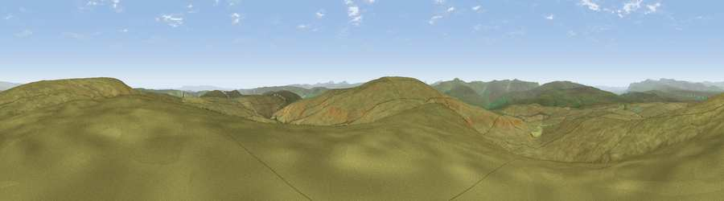

Viewpoint c10083_7846
#8834 in England · top 19% of its area beats it · —Where it is
The exact computed spot (NY 92275 04150). Click the marker for map links.
The view, rendered

A 360° render of this exact spot computed from the terrain model, tree cover and land cover — summer colours, afternoon light, calibrated against photographs of famous viewpoints. Real trees, hedges and buildings will differ in detail.
The panorama
Grey silhouette: terrain skyline in each direction (720 bearings, Earth curvature and refraction included). Dashed green: skyline with trees (+15 m) and buildings (+8 m) as obstacles. Blue strip: how far the ground is visible on each bearing.
Where the view opens
Wedge length = distance to the farthest visible ground on that bearing (vegetation-aware). Rings at 10, 25 and 50 km.
What fills the view
99% grassland
Angular shares of the visible panorama (visual magnitude), not map area. Landscape diversity 0.03 (0–1 Shannon).
Key numbers
More beautiful places nearby
The staircase of upgrades: each row has a higher view potential than everything closer. Driving times are estimates from straight-line distance, calibrated against real road routing — check an actual route before setting out.
| Place | Direction | Drive | Score |
|---|---|---|---|
| Viewpoint c10092_7857 | NE · 1 km | ~3 min | 69.5 |
| Viewpoint c10143_7703 | WNW · 8 km | ~15 min | 72.1 |
| Viewpoint c10212_7709 | NW · 10 km | ~19 min | 73.4 |
| Great Shunner Fell | SW · 10 km | ~19 min | 74.4 |
| Viewpoint near Nateby | W · 12 km | ~22 min | 75.0 |
| Viewpoint c10024_7603 | WSW · 12 km | ~23 min | 76.9 |
| Viewpoint near Buckden | S · 26 km | ~41 min | 77.3 |
| Calders | WSW · 26 km | ~42 min | 79.0 |
54.43271, -2.12059 · source: screening · position refined by local search. Computed location — check access rights before visiting.